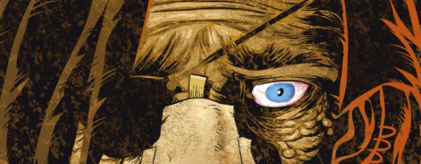

A Wally Squad (i.e. undercover) Judge that started out as a key character in Low Life, working alongside Aimee Nixon. Frank often verbalizes his inner monologue, is of questionable sanity and wears a patch over one eye. In a piece of narrative sleight-of-hand and perverse comedy, his missing eye was eventually replaced by a bionic one, but then he lost his remaining original eye, and so now his patch has changed sides. Any resemblance to Alan Moore is entirely ... on purpose.
Art by D'Israeli
| Story Title | Parts | Pages | w indicates a wraparound coverCovers | Year(s) | Issues | Writer | Artist | Colourist | Letterer |
|---|---|---|---|---|---|---|---|---|---|
From Low LifeParanoia | 10 | 52 | 1390: Henry Flint 1394: Henry Flint 2 | 2004 | 1387-1396 | Rob Williams | Henry Flint | [greyscale] | Ellie de Ville |
From Low LifeRock and a Hard Place | 4 | 20 | 1428: Henry Flint 1 | 2005 | 1425-1428 | Rob Williams | Simon Coleby | [greyscale] | Tom Frame |
From Low LifeHe's Making a List | 1 | 10 | 0 | 2005 | p2006 | Rob Williams | Simon Coleby | [greyscale] | Tom Frame |
From Low LifeBaby Talk | 4 | 20 | 1521: Simon Coleby and Chris Blythe 1 | 2007 | 1521-1524 | Rob Williams | Simon Coleby | [b&w] | Annie Parkhouse |
From Low LifeCreation | 8 | 40 | 1624: D'Israeli 1631: D'Israeli 2 | 2009 | 1624-1631 | Rob Williams | D'Israeli | [greyscale] | Ellie de Ville |
From Low LifeJive Turkey | 1 | 8 | 0 | 2009 | p2010 | Rob Williams | Smudge | [greyscale] | Simon Bowland |
From Low LifeHostile Takeover | 10 | 51 | 1705: Neil Roberts 1 | 2010 | 1700-1709 | Rob Williams | D'Israeli | [greyscale] | Ellie de Ville |
From Low LifeThe Deal | 12 | 60 | 1752: D'Israeli 1761: D'Israeli 2 | 2011 | 1750-1761 | Rob Williams | D'Israeli | [greyscale] | Ellie de Ville |
From The Simping Detective Part of the Trifecta build‑up.Jokers to the Right | 8 | 42 | 1804: Cliff Robinson & Dylan Teague (C) 1809: Tiernen Trevallion 2 | 2012 | 1804-1811 | Simon Spurrier | Simon Coleby | [spot color] | Simon Bowland |
From Low Life Part of the Trifecta build‑up.Saudade | 7 | 41 | 1805: D'Israeli 1811: D'Israeli 2 | 2012 | 1805-1811 | Rob Williams | D'Israeli | [b&w] | Ellie de Ville |
From Judge Dredd, Low Life & The Simping Detective Has three supertitles: ‑ Judge Dredd ‑ Low Life ‑ The Simping DetectiveTrifecta | 1 | 28 | Cliff Robinson & Dylan Teague (C) 1 | 2012 | 1812 | Al Ewing Simon Spurrier Rob Williams various | Carl Critchlow | <-- | Simon Bowland |
From Low LifeThe Really Big Christmas Sleep | 1 | 6 | 0 | 2014 | p2015 | Rob Williams | D'Israeli | [greyscale] | Simon Bowland |
From Judge Dredd Sequel to Enceladus: New Life (1924‑1928)Enceladus: Old Life | 8 | 51 | 1940: Greg Staples 1942: Glenn Fabry (Colours: Ryan Brown) 1945: Jake Lynch 1947: Henry Flint4 | 2015 | 1940-1947 | Rob Williams | Henry Flint, D'Israeli (e4p4) | <-- | Annie Parkhouse |
From Judge DreddAct of Grud | 3 | 18 | 2006: Henry Flint 1 | 2016 | 2004-2006 | Rob Williams | Henry Flint | <-- | Annie Parkhouse |
From Judge DreddThe Small House | 10 | 62 | 2102: Cliff Robinson & Dylan Teague 2104: Jake Lynch 2 | 2018 | 2100-2109 | Rob Williams | Henry Flint | Chris Blythe | Annie Parkhouse |
From Hershey Title on page is just "Hershey".Disease | 8 | 48 | 2176: Simon Fraser 1 | 2020 | 2175-2182 | Rob Williams | Simon Fraser | <-- | Simon Bowland |
From HersheyThe Brutal | 8 | 48 | 2218: Simon Fraser 1 | 2020-2021 | 2212-2219 | Rob Williams | Simon Fraser | <-- | Simon Bowland |
| year | episodes | pages |
| 2002 | 0 | 0 |
| 2003 | 0 | 0 |
| 2004 | 10 | 52 |
| 2005 | 5 | 30 |
| 2006 | 0 | 0 |
| 2007 | 4 | 20 |
| 2008 | 0 | 0 |
| 2009 | 9 | 48 |
| 2010 | 10 | 51 |
| 2011 | 12 | 60 |
| 2012 | 16 | 111 |
| 2013 | 0 | 0 |
| 2014 | 1 | 6 |
| 2015 | 8 | 51 |
| 2016 | 3 | 18 |
| 2017 | 0 | 0 |
| 2018 | 10 | 62 |
| 2019 | 0 | 0 |
| 2020 | 9 | 54 |
| 2021 | 7 | 42 |
| 2022 | 0 | 0 |